요즘따라 루시안 도련님께서 숨바꼭질이라는 놀이에 대해 이야기를 듣고 오신건지 하인들을 불러모아 같이 놀이를 하자며 조르는 일들이 많아졌다. 언젠가는 흥미를 잃으시겠지 하던 하인들도 보름이 넘도록 칭얼거리는 도련님의 부탁에 동참하게 되었다.
처음에는 할 일이 있는 하인들을 제외하고 대부분의 사람들이 참여했지만 시간이 지날수록 루시안 도련님을 상대해야 한다는 그 압박감 때문인지 의무감으로 참여하는 하인들밖에 남지 않았다.
"오늘도 숨바꼭질 할거지?"
루시안 도련님의 한 마디에 근처에서 듣고 있던 하인들은 모두 움찔했다. 본능적으로 오늘도 고생을 하겠다는 것을 느낀걸지도 모른다. 언제나 도련님에게 맞춰주지 않으면 곤란하다는 것을 알고 있는 우리들은 그렇다고 이야기 할수 밖에 없었다.
"지금부터 숨을테니까 10분 뒤에 찾는거야, 알겠지!"
해맑게 웃으며 지금부터 숨바꼭질을 시작하겠다는 말에 루시안 도련님은 정반대편으로 달려나갔다.
도련님이 시야 바깥으로 사라지자, 그 자리에 있었던 하인둘은 다 같이 약속이라도 한 것처럼 한숨을 내쉬었다. 물론 그 하인들 중에서 나도 예외가 될 수는 없었다. 도련님이 시작한 숨바꼭질은 처음 두 세번을 제외하고는 매번 엉뚱한 곳에 숨어계셨기 때문인지 서로를 바라보는 눈빛이 꽤나 애처로웠다.
*
루시안 도련님이 충분히 숨으셨다고 생각한 우리들은 저택 내부를 향해 들어갔다. 하인들이 많이 드나들지만 항상 머물지는 않는 곳을 선호했던 도련님이 이번에는 어떤 곳에 숨어 우리를 기다리고 계실지 회의를 하기로 했다.
"2층부터 올라갈까?"
"원래부터 램프 밑이 어두운 법이랬어."
하나같이 찾기 어려운 곳에 숨는 경우가 많았기에 운 좋게 찾는 경우가 아닌 이상에야 고달픈 하루가 되지 않을까 싶었다. 저 멀리서 먼저 걷고 있던 살마 중 한명이 갑작스레 큰 소리를 냈다. 혹시나 도련님을 발견했을까싶어 달려갔다.
"무슨 일이에요?"
"종이가 떨어져있는데 아마 힌트를 주신것 같아."
"종이? 뭐가 있기는 해?"
떨어져 있었다는 종이를 보자 삐뚤빼뚤한 선으로 무언가를 묘사하려던 그림 같았다. 도저히 어떤 그림인지 알아볼 수 없어 옆에 서 있는 선배에게 종이를 넘겼다. 그 종이를 받자 유심히 그림을 보더니 무언가 알아냈다는 듯이 눈을 반짝였다.
"이거 세탁기 아냐?"
"도대체 어떻게 보면 세탁기로 보는거죠?"
"눈썰미가 좋으면 다 보여. 일단 세탁실 근처로 가자."
종이에 그려진 절망적인 그림체를 어떻게든 세탁기라고 해석한 그 선배는 나에게 다시 종이를 돌려주며 세탁실로 향했다.
-
"혹시 아까 도련님이 하셨던 이야기 들었던 사람 있어?"
"글쎄... 숨바꼭질 하시기 전에는 일하느라 잘 못들었는데."
결국에는 두명씩 나뉘어서 찾자고 결론을 내린 우리는 아까의 그 선배와 함께 루시안 도련님을 찾기로 했다. 사실 아까의 종이가 세탁기를 그려놓은 것이 맞다고 해도 그리 쓸모있는 정보는 없겠지만서도 수중에 아무것도 없이 돌아다니는 것보다는 나을까 싶어 세탁실로 향했다.
"이렇게 노력해도 막상 찾으면 서운하다고 말하실게 뻔할텐데..."
"우리가 하기 싫다고 못하는 것도 아니잖아요?"
칼츠 가에 고용된 하인의 입장으로서 고용주가 들으면 절대 안될 이야기가 새어나왔다. 도련님의 숨바꼭질을 하는 우리들도 나름의 눈치가 보였지만 도련님과 놀아드리는 것도 일하는 것의 연장선상이라고 인정해주는 몇몇의 동료들 덕분에 귀찮은 일에서 탈출할 수 있는 변명거리가 하나 생겼다.
그렇지만 이전에 숨바꼭질을 하면서 두시간 남짓한 시간만에 루시안 도련님을 찾았던 때가 생각났다. 그때까지만 해도 저택 안에서 기묘하게도 잘 숨어계시던 도련님이 무슨 이유에서인지, 저택 바깥에 크게 자라나 있는 나무의 나뭇가지 위에 앉아있던걸 발견했다가 속이 상했던건지 그 자리에서 눈물을 한 바가지 쏟아냈었다.
다른 잡념들을 하다보니 반대편의 선배는 세탁실에서 찾을 곳은 다 찾았다며 다른 곳으로 나가자고 나를 이끌었고 천천히 복도를 걷고 있었다. 칼츠가의 저택도 나름대로 넓기 때문에 어딘가를 가려면 꽤 걸어가야 했다.
"그래도 저번처럼 너무 빠르게 찾지는 말자. 알겠지."
"피곤해질 일만 안 만들게요."
선배는 느긋하게 찾자며 말을 건넸고 모퉁이를 돌자 2층으로 올라가는 계단과 마저 이어져있는 복도가 보였다. 서로 어떻게 할지 고민하다가 여기서 갈라져 계단을 올라가기로 했다. 윗층으로 올라오니 바깥에서 도련님을 찾는 사람들이 몇몇 보였다. 처음 시작했을 때는 그 자리에 몇 명 없었는데 아마도 찾고 있던 사람들 중에서 입소문을 퍼트린게 아닐까.
쓸데없는 감상을 하면서 천천히 2층 복도를 걷다보니 '엣취-'하는 재채기 소리가.
어라? 어디서 재채기 소리를 들었는데 잘못 들은건 아니겠지 싶어 귀를 의심하던 순간에. '훌쩍-' 하며 콧물을 훔치는 소리까지. 아무리 생각해봐도 뻥 뚫리고 아무도 없는 공간에서 들릴만한 소리는 아니었다. 이 소리는 루시안 도련님이 실수로 낸 소리가 아닐까. 머리로는 차분하게 지나가야 한다는 생각이 드는데 가슴 속으로는 그렇지 못했다.
이런 상황일수록 침착하고 차분해져야하는데 분주하게 돌아가는 머리는 식을줄 모르고 정답이 아닌 오답을 내놓으려 했다. 어떻게 해야할까, 이럴때는 마음이 시키는 대로 하는게 더 괜찮지 않을까. 그 생각에 방금 소리가 들렸던 곳으로 발걸음을 돌렸다.
조용히 숨죽여 소리가 난 곳을 향해 도착한 곳은 평소 악사들을 초청해 음악을 감상하는 공간이었다. 평소에는 아무것도 없이 텅 비워두고 관리하는 곳 답게 아무것도 없이 휑하게 비워져 있었다.
하지만 악사들이 올때나 커텐이 쳐져있는 곳이었지만 지금은 수상쩍게 커텐이 모두 가려져있었다. 그리고는 커텐 중에 도련님이 숨어있을 것이 분명한 곳으로 다가가 크게 외쳤다.
"도련님!"
다가오는 발걸음을 눈치채지 못했는지 커텐 너머로 놀라는 기색이 느껴졌다. 그리고는 이내 숨어있느라 웅크렸던 몸을 펴지는 모습을 보고서는 커텐을 열었다. 하지만 거기서 보이는 모습은 루시안 도련님이 아닌 다른 사람이었다.
"아..."
다른 사람이 튀어나오니 조금은 허무한 감정이 들었다. 요 며칠간 일을 하면서 많이 마주친 얼굴이었지만 말을 하려니 막상 이름이 기억나지 않았다. 평소에 도련님이 특이한 이름이라며 자주 부르던 과일 이름이 있었는데. 이런 상황일 때 기억하지 못하다니 어이가 없었다.
"도련님이 여기 숨으라고 시켰던거야?"
정말 놀랐는지 아무 말도 하지 못하고 고개를 끄덕이고 있었다. 얼떨떨해 하고 있는 이 친구를 두고서 발길을 돌려 다시 가던 길을 가려고 했을때 옆의 커텐에서 무언가 이상한 점을 발견했다. 설마 저기에 루시안 도련님이 계신건 아니겠지 싶어서 그 근처로 다가갔다. 설마 저기는 아니겠지.
"도련님?"
흠칫 놀라는 모습이 보이는게 오답을 고른 것 같지는 않았다. 설마가 사람잡는다더니.
"도련님, 돌아가드릴까요?"
루시안 도련님은 술래가 보이지 않으니 들키지 않았다고 주장하는 것 처럼 아무말도 하지 않았지만 사회생활은 눈치껏 하라는 이야기가 있지 않은가. 아무런 대답도 듣지 못했지만 그대로 반대편으로 발길을 돌려 방을 나가기로 했다.
그런데 아까 처음으로 찾았던 그 하인의 이름이 뭐였더라.
즈